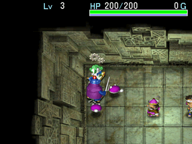
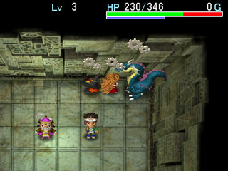
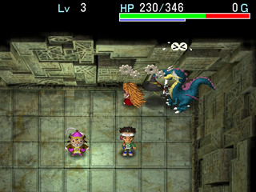
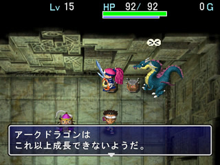

|
◆ 武器和盾的强度与攻防力的关系 ◆
外传中的武器或盾的强度（基本值＋附加值）并不等于攻击力或防御力，而是视武器或盾的基本值的大小作一定程度的正或负的修正之后才是攻击力或防御力的最终数值。例如金の盾＋99（基本防御力4）装备后防御力只有75，在这个状态合成1个「扇」印之后，盾基本数值为7，结果防御力升至95；合成2个「扇」印，基本值为10，防御力升至110；合成3个「扇」印，基本值为13，防御力升至124；合成5个「扇」印，基本值为19，防御力升至147……依此类推。所以，武器或盾的强度相同的情况下，基本值越高，攻击力或防御力就越高，秘剑＋3比こんぼう＋99攻击力高就是这个道理。
◆ 各种应该知道的小系统 ◆
A.每过1000回合吹第1次风，这时开始能够看到所有怪物、道具、楼梯的位置，甚至连透明的怪物也能看到，之后过300回合吹第2次风，再过200回合吹第3次风，然后就会被强制送回村庄，身上道具全部消失。
B.一层内除飞鸟以外，其他怪物和NPC的总数不能超过25，如果达到25时则怪物不再出现。
C.通常HP回复速度（HP回复1点所需要的回合数）为『225/最大HP』。装备いやしの腕��时则为『150/最大HP』。
D.伤害值计算式为：（攻击者攻击力－受害者防御力）×（±15%偏正值），例如攻击者攻为30，受害者防为10，相差为20，乘以15%的偏正值，伤害值就在17～23之间。
◆ 钢贺の隐し穴番付点数计算式 ◆
番付点数＝25000＋（25500×☆）＋经验值＋持入道具卖价×20＋回合数×50
☆的计算方法为每前进2F取值增加1，例如到达4F时取值为2，到达6F时取值为3，依次类推。持有各种�F和无法购买贩卖的道具如天神�Sノ��和星神��ノ盾进入迷宫，不记入番付点数。
◆ 如何一次性提升多个NPC怪物箱的LV ◆
必备道具：�h投の腕��、しあわせ草、しあわせの杖或者天使の种。首先将想要升级的怪物箱带进迷宫，接着寻找一条比较狭长的窄道把它们全部召唤出来，使这些怪物箱排成一条直线状并且飞鸟站在直线末端的位置。好了，这时装备�h投の腕��并对怪物箱投掷しあわせ草、しあわせの杖或者天使の种就可让它们同时升级，しあわせ草和天使の种如果是祝福状态效果更佳。（此法主要用于提升较高LV的怪物箱，比如说LV60以上，以便节省练级时间）
◆ 如何让怪物（浮空系含）受到机关的伤害 ◆
A.利用����のやいば或合成其能力的武器，待怪物走到机关上向其投掷即可发动机关，不过对于地雷、大型地雷和落穴的机关会令该武器消失。
B.【ブフ�`の����适用】利用怪物箱的“掷中敌人后不会消失”的特性，先放出不需要的怪物箱让敌殴打致死，可得到HP为0的坏掉的怪物箱。这样子就可拥有与����のやいば一样效果的发动机关的好东西了，想要发动机关时对踩在机关上的敌人投掷即可，这还有个好处就是还不会受到ケロケロの雨的腐蚀。
C.【クロンの����适用】当怪物走到机关上时，使用“四股の秘技”就可令怪物掉下道具发动脚下的机关。另一种方法就是，当身上的道具全满状态时，使用“��盗の秘技”，盗出的道具由于无法带在身上，这时会掉到怪物脚下从而发动机关。此外，利用“软投”的秘技也可发动怪物脚下的机关。
◆ 在仓库内练低级怪物箱的方法 ◆
必要道具：�}域の��物×2、ベルト�`ベンの箱、デビルカンガル�`の箱。在仓库左上角放置2枚圣域之卷物，让想练级的怪物箱站在下面1枚圣域上，让飞鸟装着ベルト�`ベンの箱站在上面1枚圣域上，如图所示。当然，开始练级前可先用デビルカンガル�`の箱让欲练级的怪物箱变为愤怒和3倍速状态，这样可以加快练级速度。接着飞鸟不断使用特技召唤出洞窟玛姆鲁给欲练级的怪物干掉就能迅速提升箱子的LV，但是洞窟玛姆鲁的经验值在此作中被大幅削减，真是不爽！此法适宜练LV30以前的低级怪物箱，LV30以后建议还是到深层迷宫练较快。

上述的方法需要经常找圣域卷物，比较麻烦。这里再介绍另一种方法。必要道具：��ぼうしの箱、ノロ�`ジョ系怪物箱（建议练至LV3的ノロ�`ジョの母，并且多装备几个HP回路）。下图举例说明的欲练级的怪物箱是ア�`クドラゴンの箱。

▲将怪物箱按图示的方法召唤出来后，装备ノロ�`ジョの母对欲练级的怪物箱使用特技。

▲此时与��ぼうし交换位置，失明状态的ア�`クドラゴン会不断攻击正前方的��ぼうし。

▲ア�`クドラゴン获得经验值2400点，此时把死掉的��ぼうし存入仓库就能回复HP，此法可反复进行。
◆ 无攻击力的怪物箱练级法 ◆
给ぬすっとど系以及一些攻击力很低的怪物箱练级非常困难，必须要利用しあわせ草、しあわせの杖或者天使の种来升级，而这些道具又不太好找，其实，只要给这些箱子装上はねかえし回路，就会发射所有的飞行道具，这样子带它们去打一些发射飞行道具的怪物就能升级了，比如イッテツ�檐�等等。
◆ 利用ぬすっトド系怪物箱偷盗的秘诀 ◆
用ぬすっトド系怪物箱偷盗道具或者用ガマラ系怪物箱偷钱之后会瞬飞到别的房间，但是只要装备不动回路就不会飞走了，这样就节省了回合数和满腹度。至于低攻击力的ミドロ系怪物箱，利用ケロケロの雨机关就能简单提升其LV。
◆ ドラスの����一�~村 大量保存之壶及其他道具入手法 【DC版限定】
◆
大家都知道，身上所持金为0时用困时之卷物可以获得10000G，此法就利用这点来获得大量道具，为确保所持金为整数而没有零头，到达一铜村之前的迷宫内请不要捡任何钱袋。到达一铜村后到行商人处卖掉身上的道具以便够钱买入困时之卷物，例如卖掉远投之腕轮（2000G）买入困时之卷物和识别之卷物，钱刚好用完，所持金为0。接着到仓库使用困时之卷物入手10000G。再到行商人处买入困时之卷物，剩下的钱可以购买保存之壶，巨大饭团，封印之杖等等，记住要把钱彻底用光，如果剩下几百G无法用光，可以到村子左上角赌硬币，赚够买其他道具的钱或者输光。接着不用多说了吧，照样到仓库使用困时之卷物骗钱，如此炮制很快就有大量保存之壶和大量道具。由于PC版已经把困时卷物的效果调整为1000G了，故无法使用此法获取道具。
◆ ブフ�`の����简单骗钱法 ◆
在商店里卖掉不想要的怪物箱的时候，如果在箱子里放入回路，卖的价格会是原来2倍（也就是商店出售的价格），此法可以获取更多的金钱。
◆ 强化装备和杖使用回数的另一方法 ◆
必要道具：��化の��[10]、吸い出しの��物（越多越好，也可以使用转写卷物来转写），将强化之壶的容量加到10之后，放入想要强化的装备或者杖，再用吸出卷物吸出。这样，在吸出卷物有限的条件下，可以强化很多道具。
◆ 在仓库内修练秘技至极限的方法 ◆
必要道具：キグニ族の箱、较高防御力的盾（推荐用��王の盾＋3以上，至少合成2个“弟”印），�萘Δ瓮筝�（要合成风魔石，不然就要用到金剑盾的组合）、以及想练的秘技书，练秘技之前最好还是提升一下飞鸟的LV。
承受キグニ族的怪物箱攻击可以让气力值很快回复，而“弟”印可以快速回复HP，这时不断使用想练的秘技就可快速练至极限状态。不过“��切”、“死�T”、“�R�e”和“四股”这4个秘技必须要气力值MAX才行，仓库内无法让气力值达到MAX状态，所以必须要到迷宫内去练。
还有一种方法不须用到キグニ族の箱，在盾里合成至少3个“弟”印和1个“�o”印，装备不坏的�萘Δ瓮筝�用秘技“发火”或“鬼火”放出火柱，承受火柱的攻击可以快速回复力量值。再连续使用想练的秘技即可。
“发火”秘技的修练：练这个秘技需要使用很多道具来作祭品，其实对水域使用此秘技一样可以修练，可使用“水浸”秘技制造水域。
“毒�iき”秘技的修练：需要おばけ大根の箱的配合来量产毒草，每吃1个毒草就使用毒�iき秘技1次，在迷宫内也可以通过踩毒箭机关来修练。
“����”秘技的修练：需要めまわし大根の箱的配合来量产混乱草，每吃1个混乱草就使用���⒚丶�1次，在迷宫内也可以通过踩回转盘机关来修练。
“一�菔长ぁ泵丶嫉男蘖罚鹤急�1个诅咒状态的饭团或者草，每使用1次秘技就吃一次。
“活目”秘技的修练：使用1次后即使装备怪物箱也无法解除这种状态，其实只要走出仓库就能解除并能再次使用，其他诸如“爆弹无效”、“心头灭却”等等都是同样的。
|